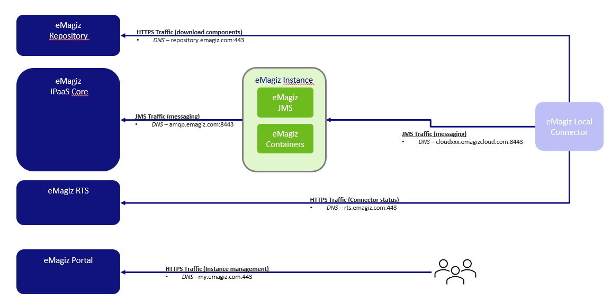

howto/runtime-installations-onpremise-linux
On-premise (Linux) eMagiz runtime installation document
This document describes what the requirements are for a eMagiz runtime installation on-premise on a Linux machine as well as a step by step guideline how to install a runtime on-premise. An on-premise installation often occurs in an architecture where the runtime should run within your own or your customer’s network. This is recommended for all connectors that communicate with a system that is located inside your network or if you would like to test locally on your computer. For an installation of a runtime on a Windows system please see On-premise eMagiz runtime installation document Windows
Requirements
To install a runtime, please be aware that eMagiz needs an environment that satisfies certain requirements. These requirements can be different depending on your architectural choices. Most common is the connector inside your network and a JMS and container running outside the network. In that case, if you are running only connectors on this environment, please keep the following requirements in mind:
- OS with support for Java
- OS user with granted security rights to run startup services (Windows services)
- The correct Java installation (Java 8 SE JRE for example, https://adoptopenjdk.net) with NO automatic updates. OpenJDK 8 is currently the recommended version for eMagiz installations.
- NTP synchronization – all eMagiz service instances should use the same time and settings.
- Access to internet
- Outbound JMS traffic - port 8443 (and 8444 in case of failover situation) - amqp.emagiz.com / cloudXXXX.emagizcloud.com
- General monitoring data to eMagiz iPaaS
- Specific JMS traffic to eMagiz JMS Server
- Outbound HTTPS traffic – port 443 – Specific provisioning data- https://rts.emagiz.com/ws/ / https://repository.emagiz.com
- Hardware requirements
- Modern CPU
- Enough Disk Space according to sizing calculations
- Enough Memory according to sizing calculations
- One of the following Linux distributions:
- Debian 6
- Ubuntu 10 and up
- RHEL 6
Additional information:
- To run an eMagiz runtime, the OS of the server should support and have Java installed. The current version is Java 8. eMagiz runtimes with version of 5.x or higher only support Java 8. These runtimes will not run on Java 7 or earlier versions. If you are running on Java 7, or if you need to use an earlier version of the eMagiz runtime, please also check ‘Installing an older version of the eMagiz runtime’.
- Additional to 1), please do NOT allow automatic updates. Updates in Java 8 are installed in a different directory than the earlier version. This causes that with every update, your JAVA_HOME system variable, which ensures that if you use Java you use that version, should be updated manually by every update. If you update automatically, this will cause issues since the JAVA_HOME variable will not properly set after each update. See the following Q&A question to learn more about the importance of JAVA_HOME when using on-premise connectors: https://my.emagiz.com/p/question/172825635700348986. Since it can be though to find a Java version via the Oracle site, you are advised to download your Java version from https://adoptopenjdk.net.
- By installing a runtime, you also need an OS user with security rights to run startup services. This is required because installing the corresponding service for a connector will make sure that the connector can independently stop or start without any user intervention. This means that if the server (JMS) restarts, no manual actions are required.
- Each server has a date and time. An eMagiz service instance use the NTP time protocol. The NTP protocol is a networking protocol for clock synchronization based on UTC time. Synchronizing your server with the NTP protocol ensures that eMagiz runtimes ‘talk’ with the same date and time. This ensures that you prevent for example:
- That you are not able to reach your connector via the Runtime Dashboard
- That synchronized communication fails due to time out errors caused by out of sync runtimes instead of that a system fails to response.
- In order to communicate with other runtimes, that are hosted outside your network, you need access to the internet.
- For your connector to communicate with your JMS server, the on-premise server needs to open its port 8443 (and 8444 in case of failover) for outgoing communication (from the server point of view). Via this port JMS data is communicated. In ensures for example that you are able to reach the connector via the runtime dashboard and that you can see statistics of the runtime in Manage. Via a different port, your connector will communicate with your container and its flows. eMagiz requires that the server opens its port 443 for outgoing information to communicate the actual messages exchanged.
- The servers itself has requirements as well. Please ensure that the server has a modern CPU, enough diskspace and enough memory.
- Most important is that for each runtime at least 1GB of RAM Memory is available. These calculation is made as follows:
- 500 MB heap memory
- 192 MB metaspace memory
- 100 MB overhead The above is the bare minimum needed to run. As the number of flows running on a connector increases the memory also needs to be increased. The same logic applies to flows that use up a lot of memory because multiple steps are executed within that flow. Both are solid reasons to use 1GB as a general rule of thumb but at the same time always take into account new developments when setting up the sizing.
If you install your JMS and container as well within your network and not in the cloud, please keep in mind that you need to open port 8443 (and 8444 in case of failover) as well for incoming communication.

Java runtime and eMagiz runtime compatibility
Java is required to run eMagiz instances, however Java and eMagiz are continuously developing their software. This means that at some point in time older versions of Java and older parts of eMagiz are not supported anymore.
Please see the eMagiz Platform release considerations which runtime version, buildnumbers, Java version and so forth are still supported within the eMagiz platform.
How to install
This chapter will discuss a step to step guideline of how to install a new eMagiz runtime of 5.X or higher. As a reminder this how to is only applicable for a Linux environment. Please see see On-premise eMagiz runtime installation document Windows on how to install a runtime on a Windows enviroment.
- Log in via Putty by typing in the host and the port and press load
- When asked for credentials fill in credentials (Be aware, Linux does not accept ctrl+v and does not show the password or an indication of the password). Right mouse click to copy the password and press enter
- Create folder in which the installation needs to happen. Use the following command via Putty: sudo mkdir -p {directory.to.place.file} (When asked for password supply it)
- Download the correct runtime from the correct environment you want to install
- Place the zip file in a folder (probably tmp) from which you can copy it to the directory you created in step 3
- Navigate to the folder in which you placed the zip file (Command is: cd {directory structure}). Copy the zip file to the directory you created in step 3. Command for this is: sudo cp ./{filename of zip} {directory you created in step 3}
- Navigate to the folder to which you copied the zip file (Command is: cd {directory structure}) and unzip the zip file. Command for this is: sudo unzip {name of zip file}
- Check whether the unzip action worked correctly. This can be done by running the command ls -al. This shows all the folder/files in the directory. After conforming, check if you see the directory you expect, the unzip action worked remove the zip file from the folder. This can be done based on the following command: sudo rm -r {name of zipfile}. Check whether removal worked
- Navigate to tmp folder and remove zip from there as well.
- Navigate back to the folder in which you placed the directory you want to install
- Install the service for eMagiz by running “install-service” in the “bin” folder of the unzipped runtime by following the below outlined steps:
- Check files in “bin” folder are executable (There should be an x when you type: “ls -al” for files: setenv, install-service)(if not then type: sudo chmod a+x setenv install-service karaf shell)
- Type: “sudo ./install-service”
- The output of this command shows the command necessary to finish the install as a service. Linux will show you which version of the command you need.
- Systemd (newer/most systems)(use full path) Type: sudo systemctl enable <INSTALL_DIR>/bin/
.service - SystemV (older systems)(use full path) Type: sudo ln -s <INSTALL_DIR>/bin/<SERVICE_NAME>-service /etc/init.d/; sudo update-rc.d <SERVICE_NAME>-service defaults
- As administrator, start the eMagiz service (or restart the system, as the service is configured to run “Automatic” at startup):
- systemd type: sudo systemctl start <SERVICE_NAME>
- SystemV Type: sudo /etc/init.d/<SERVICE_NAME>-service start
- Done: Use the runtime dashboard in the portal to monitor and control the started runtime (e.g. deploy/undeploy flows).
Setting Java Home addendum
Before setting JAVA_HOME first check if JAVA_HOME is already set
- Open Console via Putty
- Execute the following command line: echo $JAVA_HOME
- If output is a path, then your JAVA_HOME is set, make sure the path is correct. If the path is correct no further action is needed
- If output is empty or path is incorrect execute the following: vi ~/.bashrc OR vi ~/.bash_profile
- Add line: export JAVA_HOME=/usr/java/java-version
- Save the file
- Source ~/.bashrc OR source ~/.bash_profile
- Execute: echo $JAVA_HOME
- Output should print the path
Sizing upgrade addendum
Estimate the size and the predicted load of the runtime and decide if the default memory settings are enough. If you need more memory, for example when you use more than 20 flows on one connector or if some of the flows running on your connector use up more memory as predicted / default.
In these cases follow the steps outlined below to change the sizing:
- Log in via Putty by typing in the host and the port and press load
- When asked for credentials fill in credentials (Be aware, Linux does not accept ctrl+v and does not show the password or an indication of the password). Right mouse click to copy the password and press enter
- Navigate to the directory where you have installed the runtime (Command is: cd {directory structure})
- Open the folder related to the runtime you want to change (Command is: cd emagiz_{technicalbusname}-{containertype}-{techincalnameruntime}_{environment}).
- Open the etc folder within your runtime installation (Command is: cd etc)
- Type in the following command: sudo vi emagiz and press Tab. This way Linux should auto suggest the so called wrapper.conf to be edited and press Enter if so
- Type "i" to enter insert mode
- Change the values of heap and or metaspace memory you want to change (you can navigate through the document with your arrow keys)
- Press ESC and then type ":wq!" then press Enter to save the changes and exit Edit mode. Note: If you would like to exit the file without making any changes press ESC, then type ":q!" and press Enter
- Restart the runtime by executing the correct restart command:
- systemd type: sudo systemctl restart <SERVICE_NAME>
- SystemV Type: sudo /etc/init.d/<SERVICE_NAME>-service restart
Multiple Java versions on same server addendum
When confronted with a situation in which you have to support multiple runtime versions with multiple Java versions. This is mainly the case when both Acceptance and Production connectors are running on the same server on-premise or when you migrate environments in steps. To determine the correct Java version needed for your runtime please see the attached picture detailed under Java runtime and eMagiz runtime compatibility. Be warned: These steps need to be taken before you install a runtime. If you have already installed the runtime please use the correct Linux uninstall command to uninstall the service before proceeding. When confronted with this situation on a live environment please first discuss your actions with CAPE support.
- Log in via Putty by typing in the host and the port and press load
- When asked for credentials fill in credentials (Be aware, Linux does not accept ctrl+v and does not show the password or an indication of the password). Right mouse click to copy the password and press enter
- Navigate to the directory where you have installed the runtime (Command is: cd {directory structure})
- Open the folder related to the runtime you want to change (Command is: cd emagiz_{technicalbusname}-{containertype}-{techincalnameruntime}_{environment}).
- Open the bin folder within your runtime installation (Command is: cd bin)
- Type in the following command: sudo vi setenv.bat
- Type "i" to enter insert mode
- Navigate with the help of the arrow keys to the part of the file that says rem SET JAVA_HOME and change this to SET JAVA_HOME=
The Java path refers to the location (path) where Java (8) is installed. Commonly this path will look like: ‘C:\Program Files\Java\jre1.8.x_xxx’ of ‘C:\Program Files\Java\jdk1.8.x_xxx’. Be warned: Make sure no spaces are surrounding the ‘=’ character - Press ESC and then type ":wq!" then press Enter to save the changes and exit Edit mode. Note: If you would like to exit the file without making any changes press ESC, then type ":q!" and press Enter
- Install the runtime via the steps discussed above